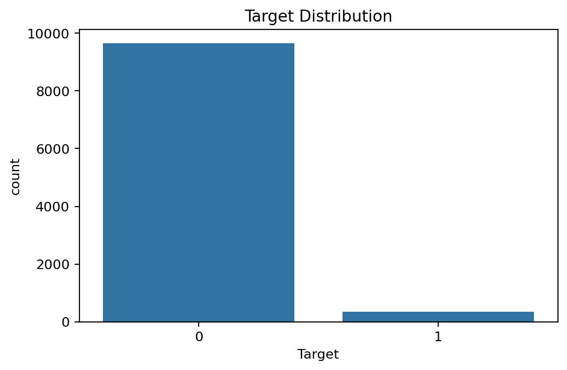
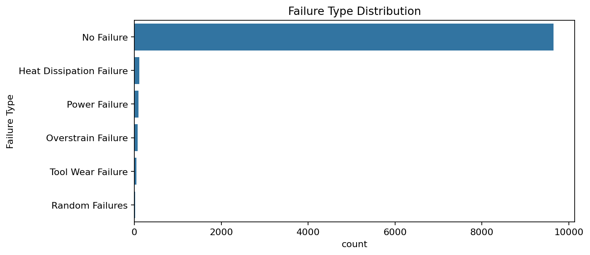
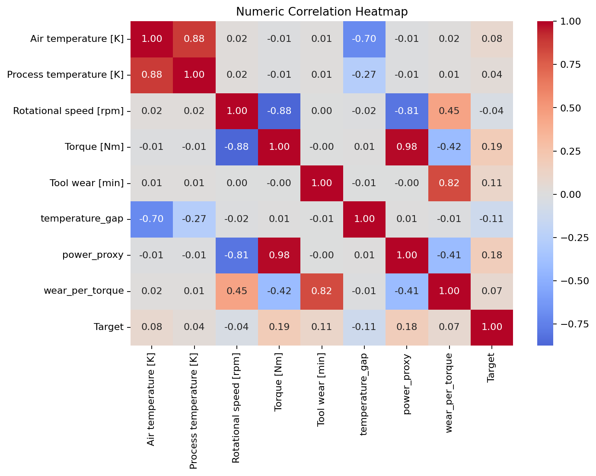
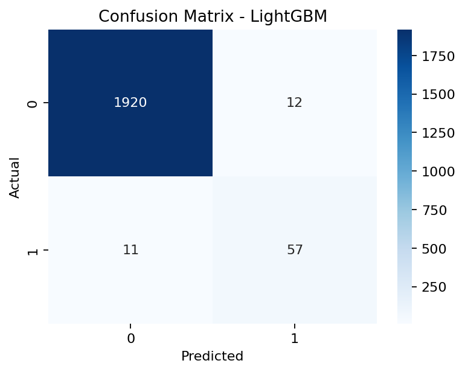
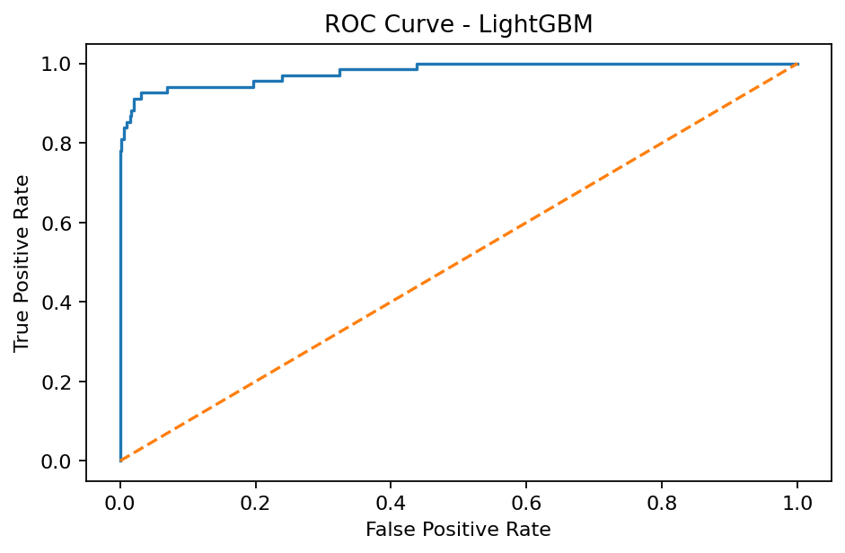
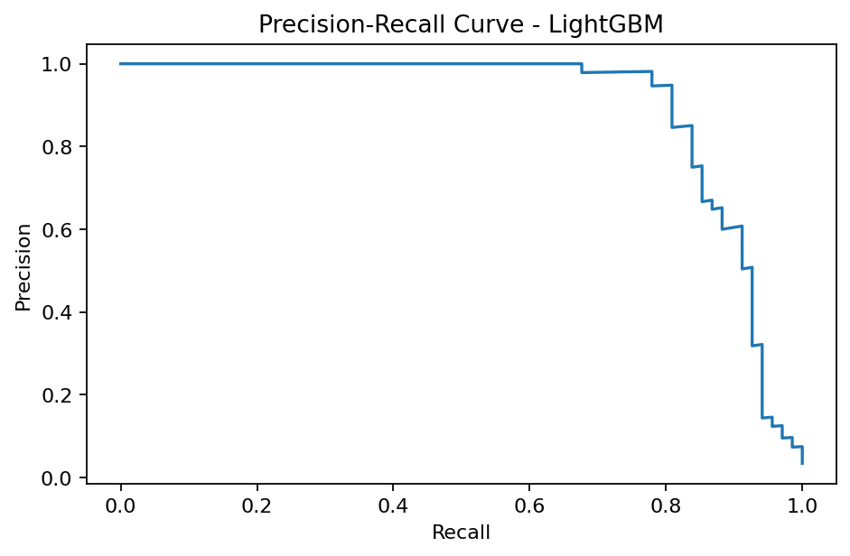
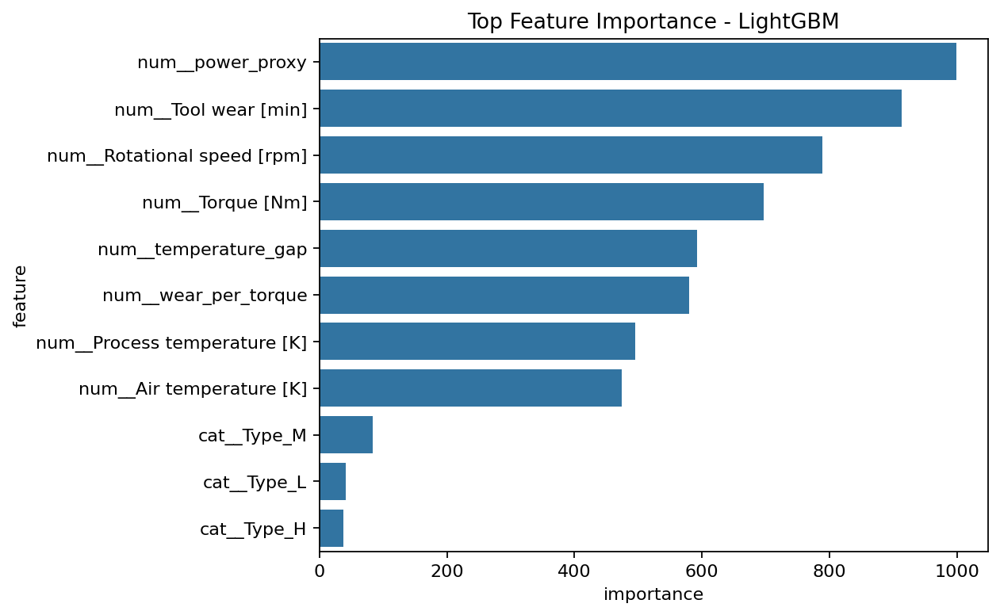

이 리포트는 Kaggle 데이터셋 shivamb/machine-predictive-maintenance-classification을 기반으로 생성했습니다.
고장 비율이 낮은 불균형 binary classification 데이터입니다. Failure Type은 결과성 컬럼이므로 1차 예측 feature에서 제외했습니다.
| Target | count |
|---|---|
| 0 | 9661 |
| 1 | 339 |

| Failure Type | count |
|---|---|
| No Failure | 9652 |
| Heat Dissipation Failure | 112 |
| Power Failure | 95 |
| Overstrain Failure | 78 |
| Tool Wear Failure | 45 |
| Random Failures | 18 |


고장 미탐(False Negative)을 줄이는 것이 중요하므로 recall, F1, PR-AUC를 함께 봐야 합니다.
| model | accuracy | precision | recall | f1 | roc_auc | pr_auc |
|---|---|---|---|---|---|---|
| LightGBM | 0.9885 | 0.8261 | 0.8382 | 0.8321 | 0.9794 | 0.8973 |
| RandomForest | 0.9835 | 0.7108 | 0.8676 | 0.7815 | 0.9840 | 0.8615 |
| XGBoost | 0.9820 | 0.6860 | 0.8676 | 0.7662 | 0.9822 | 0.8792 |
| LogisticRegression | 0.8635 | 0.1827 | 0.8676 | 0.3018 | 0.9376 | 0.4432 |



| feature | importance |
|---|---|
| num__power_proxy | 999 |
| num__Tool wear [min] | 913 |
| num__Rotational speed [rpm] | 789 |
| num__Torque [Nm] | 697 |
| num__temperature_gap | 592 |
| num__wear_per_torque | 580 |
| num__Process temperature [K] | 495 |
| num__Air temperature [K] | 474 |
| cat__Type_M | 83 |
| cat__Type_L | 41 |
| cat__Type_H | 37 |
